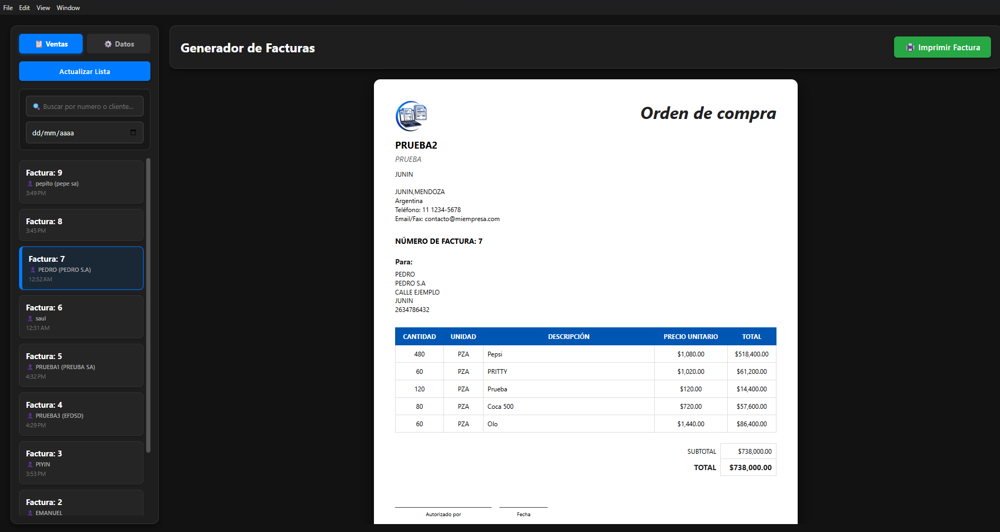

Soluciones Implementadas

Sistema Autónomo de Gestión Deportiva
El Problema
Pérdida de ingresos por seguimiento manual de cuotas vencidas y dependencia de sistemas en la nube inestables.
La Solución
Software de escritorio robusto (Electron/SQLite) sin dependencia de internet que gestiona socios, controla accesos y alerta sobre pagos atrasados.
El Impacto
Protección del flujo de caja mensual y profesionalización de la recepción del comercio sin costos fijos de servidores.

Sistema Ágil de Facturación y Órdenes de Compra
El Problema
Pérdida de tiempo al buscar historiales de ventas, lentitud para armar comprobantes manualmente y dificultad para mantener una imagen comercial consistente.
La Solución
Moderno sistema de escritorio en modo oscuro que filtra registros en tiempo real y automatiza la generación de documentos estructurados (PDF/Impresión) con logotipo empresarial.
El Impacto
Optimización total del flujo de trabajo diario. El comercio recupera información al instante y entrega facturas elegantes, proyectando una imagen corporativa altamente profesional.
Arquitectura y Tecnologías
Lógica Backend & Spring Boot
Bases de Datos Relacionales (SQL)
Mapeo Objeto-Relacional (ORM)
Desarrollo de Apps Nativas (Electron)
¿Tienes un proceso manual que te hace perder tiempo y dinero?
Cuéntame cómo funciona tu negocio y analicemos si el software puede resolverlo.
Contactar por WhatsApp